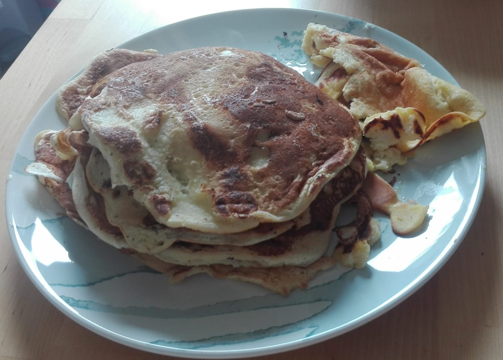

Pancakes

Ingredients
- 200g wheat flour
- At least 10g ground flaxseeds or chia seeds
- 250ml oat milk (I usually start with this amount and adjust the consistency as needed)
- About 20g sugar (just enough to make it slightly sweet)
Steps
- Mix all the ingredients together.
- The batter should be slightly thick so that it spreads well in the pan but still holds together.
- Ideally, let the batter sit for a few minutes so the flax or chia seeds can expand and help bind the mixture.
- TI usually add a little oil to the pan after every second pancake.
And that's it, enjoy your meal!
Home